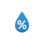

🌤️ พยากรณ์อากาศและปริมาณฝนล่วงหน้า
OpenWeather + TMD NWP
หลายแหล่งข้อมูล
--°
--
รู้สึกเหมือน --
OpenWeather
⚠️ ข้อมูลอาจไม่เป็นปัจจุบัน

ความชื้น--
ลม
--
ฝน 1 ชม.ที่ผ่านมา
--
โอกาสฝน (ชม.นี้ → ถัดไป)
--
เมฆปกคลุม
--
ความกดอากาศ
--
พายุฝนฟ้าคะนอง
--
ดัชนี UV
--
ฝนระยะสั้น · 2 ชม.ข้างหน้า
OpenWeather
⚠️ ข้อมูลฝนระยะสั้นอาจไม่เป็นปัจจุบัน
ความแรงของฝนทุก 15 นาที (ช่องจางด้านซ้ายของ "ตอนนี้" = ฝนที่วัดได้จริงจากสถานี กทม. ช่วงที่ผ่านมา) ·
เล็กน้อย
ปานกลาง
หนัก
หนักมาก
TMD NWP (กรมอุตุฯ)
⚠️ ข้อมูลรายชั่วโมงอาจไม่เป็นปัจจุบัน
เส้นเหลือง = อุณหภูมิสูงสุด · เส้นฟ้า = ต่ำสุด · แท่ง/คำใต้แท่ง = ปริมาณฝนทั้งวัน (ตัวเลขดูได้เมื่อแตะคอลัมน์) · แตะคอลัมน์เพื่อดูรายละเอียด
TMD NWP (กรมอุตุฯ)
📡 เรดาร์ฝน หนองจอก (กทม.)
ภาพเคลื่อนไหว (Loop)

ไม่สามารถโหลดภาพเรดาร์ได้ ลองกดรีเฟรช
ภาพเรดาร์เคลื่อนไหว · รัศมี 60/120 กม. · รีเฟรชอัตโนมัติทุก 5 นาที
ต้นทาง กทม. ·
TMD Radar Loop
🛡️ วิเคราะห์ความเสี่ยงน้ำท่วม
ระดับน้ำ + สถานีวัดฝน กทม. + พยากรณ์ฝนหลายแหล่ง
⚠️ ผลวิเคราะห์อาจไม่เป็นปัจจุบัน
กำลังวิเคราะห์ข้อมูลระดับน้ำและสภาพอากาศ...
⚠️ ผลวิเคราะห์นี้คำนวณอัตโนมัติจากพยากรณ์อากาศและข้อมูลตรวจวัด การคาดการณ์อาจเกิดความผิดพลาดได้
โปรดใช้ประกอบการตัดสินใจร่วมกับประกาศทางการของกรมอุตุนิยมวิทยาและกรุงเทพมหานคร
🌊 ระดับน้ำในคลอง
เกณฑ์เตือนภัย/วิกฤติของแต่ละสถานีตามสำนักการระบายน้ำ กทม.
⚠️ ข้อมูลระดับน้ำอาจไม่เป็นปัจจุบัน
📉 ระดับน้ำย้อนหลัง
⚠️ ข้อมูลกราฟอาจไม่เป็นปัจจุบัน